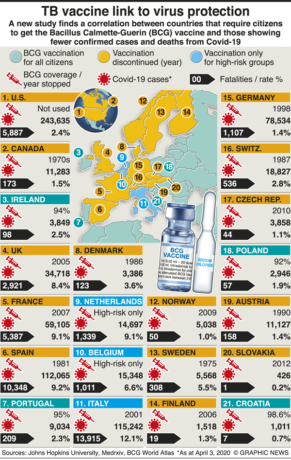

В начале апреля 2020 г. были анонсированы предварительные результаты исследования, проведённого на базе Нью-Йоркского института технологии (New York Institute of Technology), согласно которым в странах, в которых проводится вакцинация с использованием вакцины БЦЖ, отмечается меньше подтверждённых случаев и летальных исходов от Covid-19.
В начале апреля 2020 г. были анонсированы предварительные результаты исследования, проведённого на базе Нью-Йоркского института технологии (New York Institute of Technology), согласно которым в странах, в которых проводится вакцинация с использованием вакцины БЦЖ, отмечается меньше подтверждённых случаев и летальных исходов от Covid-19.
Исследователи отметили, что им известны публикации, согласно которым вакцина БЦЖ защищает не только от туберкулёза, но и от некоторых других инфекционных заболеваний. Так, авторы ссылаются на исследование, проведённое в Африке у детей первых 2 лет жизни, которое показало, что вакцина БЦЖ способствует активации врождённого иммунитета и стимулирует лейкоциты на борьбу с другими патогенами, а не только с микобактериями туберкулёза. Отмечено, что вакцина БЦЖ сенсибилизирует иммунную систему таким образом, что всякий раз, когда какой-либо патоген использует такую же стратегию атаки, как и микобактерии туберкулёза, макроорганизм может среагировать лучше, чем иммунная система тех, кто не был вакцинирован.
Ведущий автор исследования Gonzalo Otazu и его команда начали работу над анализом после того, как отметили относительно небольшое количество случаев заболевания в Японии. Эта страна одной из первых за пределами Китая сообщила о подтверждённых случаях выявления коронавируса, и в Японии не были введены ограничительные меры, как это сделали многие другие страны.
Исследователи объединили данные о том, какие страны имеют универсальную вакцинацию с использованием вакцины БЦЖ и когда эта вакцинация была внедрена или отменена из-за ненадобности. Затем учёные сравнили количество подтверждённых случаев заболевания и смертей от Covid-19 для уточнения возможной корреляции. В ходе анализа не использовались данные о подтверждённых случаях из стран с низким уровнем дохода, поскольку являются недостаточно надёжными для вынесения обоснованного суждения.
Среди стран с высоким уровнем дохода, в которых зарегистрировано большое количество случаев заболевания Covid-19, США и Италия рекомендуют вакцину БЦЖ, но только группам риска, в то время как Германия, Испания, Франция, Иран и Великобритания раньше проводили вакцинацию БЦЖ, но прекратили её годы или десятилетия назад. Китай, где началась пандемия, имеет политику вакцинации БЦЖ, но она не тщательно соблюдалась до 1976 г. Страны, включая Японию и Южную Корею, которым удалось контролировать это заболевание, придерживаются универсальной политики вакцинации БЦЖ.
Одним из первых, кто проводит исследование эффективности вакцины БЦЖ против коронавируса, является Mihai Netea, эксперт в области инфекционных заболеваний в Медицинском центре Университета Радбуда (Radboud Universty Medical Center) в Нидерландах. Команда Netea уже включила в исследование 400 медицинских работников, из них 200 вводилась вакцина БЦЖ и 200 — плацебо. Пока не ожидается никаких результатов, по крайней мере, в течение двух месяцев. Также планируется проведение отдельного исследования для изучения эффективности вакцины БЦЖ у лиц старше 60 лет.
Исследователи во главе с Gonzalo Otazu планируют проведение исследования в 4 странах. Около 4000 медицинских работников в больницах по всей Австралии и 1000 медицинских работников в восьми нидерландских больницах получат вакцину или плацебо. Также планируется провести исследование в Бостоне (штат Массачусетс, США) и Великобритании.
В случае успеха данного проекта можно ожидать, что достаточно простой метод (вакцина стоит всего лишь 34 евро (30 фунтов стерлингов, 36 долларов за 1 дозу) может обеспечить дешёвый и легко доступный метод защиты от коронавируса.

TB vaccine link to coronavirus resistance
GraphicNews